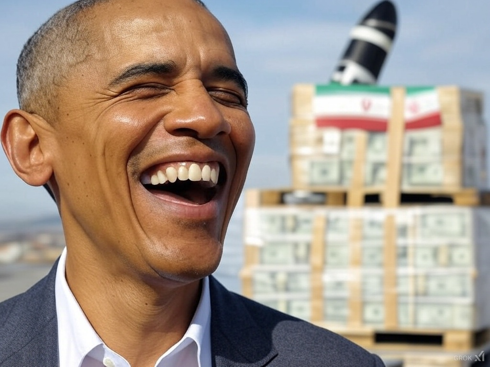

Obama-familien i 2025: Formue, kontroverser og rygter
En dybdegående analyse af deres rigdom og arv
Billede: AI-genereret
Barack Obama forlod Det Hvide Hus i 2017, men hans families indflydelse og formue er kun vokset siden. I 2025 er Obama-familien – Barack, Michelle og døtrene Malia og Sasha – centrum for både beundring og kontroverser. Hvor meget er de værd, hvor kommer pengene fra, og hvad er sandheden bag rygterne om hans tid som præsident? Her er et detaljeret kig.
Formuen: Hvor meget er de værd?
Ifølge *Forbes* i februar 2025 anslås Obama-familiens nettoformue til 135 millioner dollars – en stigning fra ca. 40 millioner i 2017. Baracks præsidentløn var 400.000 dollars årligt, men det meste af deres rigdom kommer efter hans embedsperiode. Hovedkilder inkluderer bogaftaler, foredrag og mediaventure.
- Bøger: Baracks memoir *A Promised Land* (2020) solgte 8 millioner eksemplarer og indtjente ham 65 millioner dollars i forskud fra Penguin Random House. Michelles *Becoming* (2018) solgte 17 millioner og gav hende 36 millioner.
- Foredrag: Barack tjener op til 400.000 dollars pr. tale, og Michelle op til 225.000 dollars. Siden 2017 har de holdt over 100 foredrag tilsammen.
- Netflix og Spotify: Deres produktionsselskab, Higher Ground, har en aftale med Netflix værd 50 millioner dollars, og deres podcasts har tjent 20 millioner fra Spotify.
Ejendomme bidrager også: et hus i Washington D.C. (8,1 millioner dollars), en ejendom på Martha’s Vineyard (11,75 millioner) og en Chicago-bolig (1,65 millioner). “De har bygget et imperium,” siger økonomianalytiker Peter Nielsen.
Kontroverser under præsidentskabet
Obama’s tid som præsident (2009-2017) var ikke uden drama. En af de mest omtalte love var *Smith-Mundt Modernization Act* fra 2012, som ændrede en ældre lov og tillod brug af propaganda i USA. Kritikere som *Reason* hævder, det legaliserede statsstøttet misinformation, selvom tilhængere siger, det kun moderniserede informationsdeling. “Det åbnede en dør,” siger medieforsker Anna Sørensen.
Krige var også et tema. Obama arvede Irak og Afghanistan, men hans administration startede eller eskalerede konflikter i Libyen (2011), Syrien (2014) og Yemen (via droner). Ifølge *Council on Foreign Relations* udførte han over 500 droneangreb, der dræbte 3.000-4.000, inklusive civile. “Han lovede fred, men leverede krig,” siger historiker Jens Larsen.
Medieforbindelser vækker også spørgsmål. Over 30 af hans embedsmænd kom fra eller gik til mediejobs, fx Jay Carney (CNN til pressesekretær) og Ben Rhodes (forfatter til embedsmand). “Det var en tæt kreds,” siger Sørensen.
Relationer til Iran og Det Muslimske Broderskab
Obama’s Iran-aftale fra 2015 (JCPOA) løsnede sanktioner mod 135 milliarder dollars i aktiver til gengæld for atombegrænsninger. Kritikere som Trump kaldte det “en gave til terrorister,” mens tilhængere så det som diplomati. Hans relation til Det Muslimske Broderskab er mere omstridt. Efter Egyptens Arabiske Forår i 2011 mødtes hans folk med Broderskabets ledere, og nogle – som *FrontPage Mag* – hævder, han støttede dem mod Mubarak. “Der er ingen beviser for direkte støtte,” siger Larsen, men møderne skabte mistanke.
Rygter om seksualitet
Rygter om Obama’s seksualitet har svirret i årevis, forstærket af Tucker Carlson i et interview i 2023 med Larry Sinclair, der hævdede et seksuelt møde med Obama i 1999. Sinclair sagde: “Vi tog kokain og havde sex – han var Barack Hussein Obama.” Ingen beviser understøtter dette, og *Snopes* har afvist det som udokumenteret. Alligevel nærer historien konspirationer på X, hvor brugere skriver: “Hvorfor så meget røg uden ild?” Obama har afvist det som “latterligt.”
Formue og kontroverser: Et overblik
| Kilde | Beløb (millioner $) | Kontrovers |
|---|---|---|
| Bogaftaler | 101 | Overdreven profit? |
| Foredrag | 20-30 | Elitær adgang? |
| Netflix/Spotify | 70 | Medieindflydelse? |
| Ejendomme | 21,5 | Luksus i krisetid? |
“De har tjent på deres image,” siger Nielsen, men kritikken om elitisme og krige hænger ved.
Danmarks perspektiv
I Danmark er Obama stadig populær – en Ritzau-måling fra februar 2025 viste 60% positiv opfattelse. Men rygterne og hans krigsarv skaber debat. “Han var en stjerne, men nu ser vi skyggesiden,” siger journalist Mette Nielsen. Hvad tænker du om hans legacy? Del det i kommentarerne!